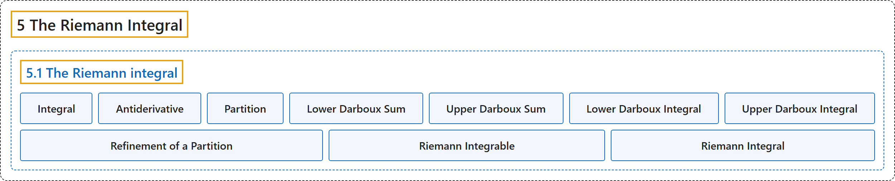

5.1 The Riemann integral
Classification

Glossary
| Term | Definition | 中文翻译 | Source |
|---|---|---|---|
| 5.1 The Riemann integral 黎曼积分 |
(No definition) | （无定义） | Lebl, 2026, section 5.1 |
| Integral 积分 |
"An integral is a way to “sum” the values of a function." | 积分是对函数值“求和”的一种方式。 | Lebl, 2026, section 5.1 |
| Antiderivative 原函数 |
"There is sometimes confusion among students of calculus between the integral and the antiderivative. The integral is (informally) the area under the curve, nothing else. That we can compute an antiderivative using the integral is a nontrivial result we must prove." | 学微积分的学生有时会混淆积分与原函数。积分（非正式地说）就是曲线下的面积，别无其他。可以用积分求出原函数，是一个必须证明的非平凡结果。 | Lebl, 2026, section 5.1 |
| Partition 划分 |
"A partition \(P\) of \([a,b]\) is a finite set of numbers \(\{ x_0,x_1,x_2,\ldots,x_n \}\) such that \(a = x_0 < x_1 < x_2 < \cdots < x_{n-1} < x_n = b\)." | \([a,b]\) 的划分 \(P\) 是满足 \(a = x_0 < x_1 < x_2 < \cdots < x_{n-1} < x_n = b\) 的有限数集 \(\{ x_0,x_1,x_2,\ldots,x_n \}\)。 | Lebl, 2026, Definition 5.1.1 |
| Lower Darboux Sum 下达布和 |
"Suppose \(f \colon [a,b] \to \mathbb{R}\) is bounded and \(P\) is a partition of \([a,b]\). Define \(m_i := \inf \, \bigl\{ f(x) : x_{i-1} \leq x \leq x_i \bigr\}\), \(L(P,f) := \sum_{i=1}^n m_i \Delta x_i\). We call \(L(P,f)\) the lower Darboux sum." | 设 \(f \colon [a,b] \to \mathbb{R}\) 有界，\(P\) 是 \([a,b]\) 的划分。定义 \(m_i := \inf \, \bigl\{ f(x) : x_{i-1} \leq x \leq x_i \bigr\}\)，\(L(P,f) := \sum_{i=1}^n m_i \Delta x_i\)。称 \(L(P,f)\) 为下达布和。 | Lebl, 2026, Definition 5.1.1 |
| Upper Darboux Sum 上达布和 |
"Define \(M_i := \sup \, \bigl\{ f(x) : x_{i-1} \leq x \leq x_i \bigr\}\), \(U(P,f) := \sum_{i=1}^n M_i \Delta x_i\). We call \(L(P,f)\) the lower Darboux sum and \(U(P,f)\) the upper Darboux sum." | 定义 \(M_i := \sup \, \bigl\{ f(x) : x_{i-1} \leq x \leq x_i \bigr\}\)，\(U(P,f) := \sum_{i=1}^n M_i \Delta x_i\)。称 \(L(P,f)\) 为下达布和，\(U(P,f)\) 为上达布和。 | Lebl, 2026, Definition 5.1.1 |
| Lower Darboux Integral 下达布积分 |
"As the sets of lower and upper Darboux sums are bounded, we define \(\underline{\int_a^b} f(x)\,dx := \sup \, \bigl\{ L(P,f) : P \text{ a partition of } [a,b] \bigr\}\). We call \(\underline{\int}\) the lower Darboux integral." | 由于上、下达布和构成的集合有界，定义 \(\underline{\int_a^b} f(x)\,dx := \sup \, \bigl\{ L(P,f) : P \text{ a partition of } [a,b] \bigr\}\)。称 \(\underline{\int}\) 为下达布积分。 | Lebl, 2026, Definition 5.1.3 |
| Upper Darboux Integral 上达布积分 |
"We define \(\overline{\int_a^b} f(x)\,dx := \inf \, \bigl\{ U(P,f) : P \text{ a partition of } [a,b] \bigr\}\). We call \(\underline{\int}\) the lower Darboux integral and \(\overline{\int}\) the upper Darboux integral." | 定义 \(\overline{\int_a^b} f(x)\,dx := \inf \, \bigl\{ U(P,f) : P \text{ a partition of } [a,b] \bigr\}\)。称 \(\underline{\int}\) 为下达布积分，\(\overline{\int}\) 为上达布积分。 | Lebl, 2026, Definition 5.1.3 |
| Refinement of a Partition 划分的加细 |
"Let \(P = \{ x_0, x_1, \ldots, x_n \}\) and \(\widetilde{P} = \{ \widetilde{x}_0, \widetilde{x}_1, \ldots, \widetilde{x}_{\ell} \}\) be partitions of \([a,b]\). We say \(\widetilde{P}\) is a refinement of \(P\) if as sets \(P \subset \widetilde{P}\)." | 设 \(P = \{ x_0, x_1, \ldots, x_n \}\) 与 \(\widetilde{P} = \{ \widetilde{x}_0, \widetilde{x}_1, \ldots, \widetilde{x}_{\ell} \}\) 是 \([a,b]\) 的划分。若作为集合 \(P \subset \widetilde{P}\)，则称 \(\widetilde{P}\) 是 \(P\) 的加细。 | Lebl, 2026, Definition 5.1.6 |
| Riemann Integrable 黎曼可积 |
"Let \(f \colon [a,b] \to \mathbb{R}\) be a bounded function such that \(\underline{\int_a^b} f(x)\,dx = \overline{\int_a^b} f(x)\,dx\). Then \(f\) is said to be Riemann integrable." | 设 \(f \colon [a,b] \to \mathbb{R}\) 是满足 \(\underline{\int_a^b} f(x)\,dx = \overline{\int_a^b} f(x)\,dx\) 的有界函数，则称 \(f\) 黎曼可积。 | Lebl, 2026, Definition 5.1.9 |
| Riemann Integral 黎曼积分 |
"When \(f \in \mathcal{R}\bigl([a,b]\bigr)\), we define \(\int_a^b f(x)\,dx := \underline{\int_a^b} f(x)\,dx = \overline{\int_a^b} f(x)\,dx\). The number \(\int_a^b f\) is called the Riemann integral of \(f\), or sometimes simply the integral of \(f\)." | 当 \(f \in \mathcal{R}\bigl([a,b]\bigr)\) 时，定义 \(\int_a^b f(x)\,dx := \underline{\int_a^b} f(x)\,dx = \overline{\int_a^b} f(x)\,dx\)。数 \(\int_a^b f\) 称为 \(f\) 的黎曼积分，有时简称 \(f\) 的积分。 | Lebl, 2026, Definition 5.1.9 |
References
Lebl, J. (2026). Basic analysis I & II: Introduction to real analysis (May 22, 2026 edition). Retrieved October 29, 2026, from https://www.jirka.org/ra/html/